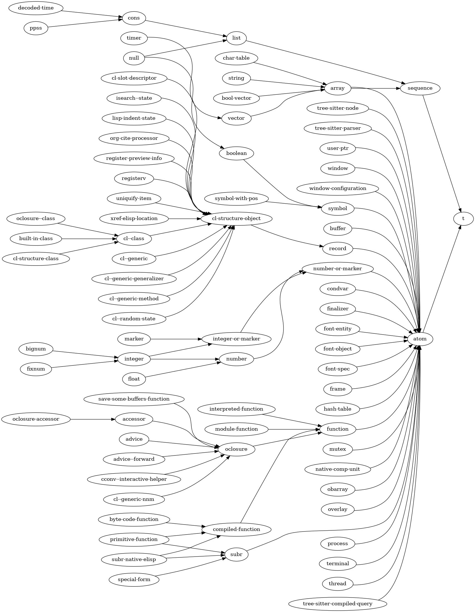

Lispオブジェクトのタイプは階層によって組織化されており、これはタイプが他のタイプを継承できることを意味しています。(タイプAから派生した)タイプBのオブジェクトは、タイプAのすべての特徴を継承します。これはタイプBのオブジェクトはすべて、同時にその派生元であるタイプAのオブジェクトであることも意味しています。
すべてのタイプはタイプtを継承します。
defclassやcl-defstructを通じて、新たなタイプをユーザーが定義できます。
プリミティブタイプにたいするLispタイプ階層は、以下のように表すことができます:
たとえばタイプlistは、それ自体がtを継承する(特殊な)タイプsequenceを継承しています。